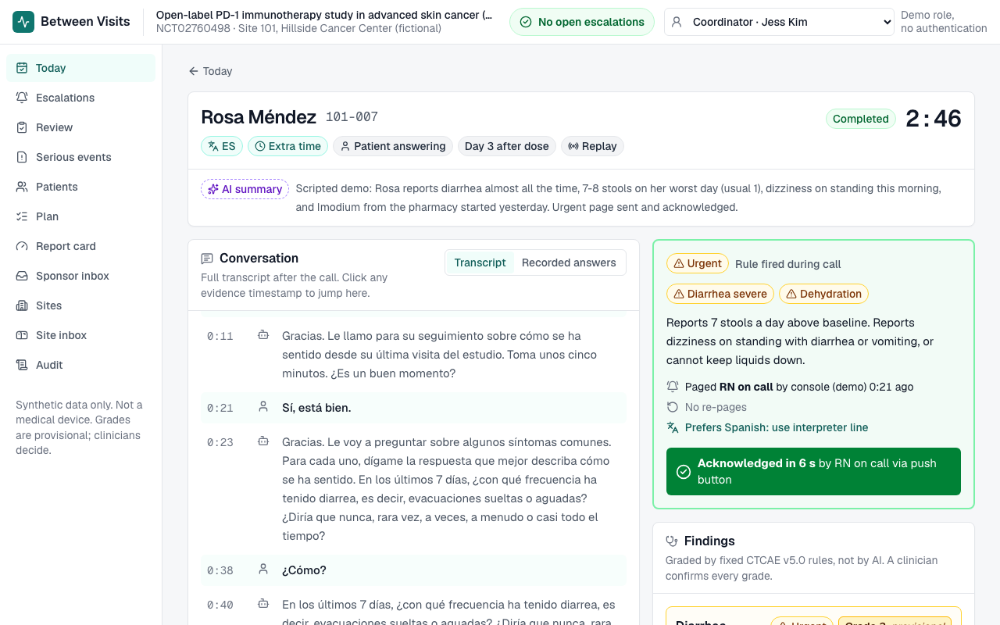
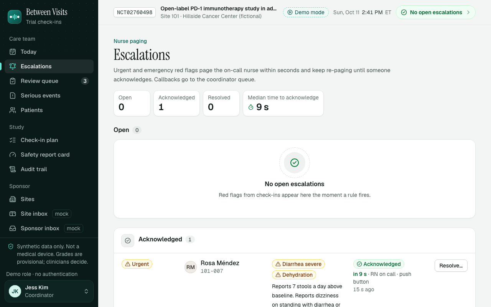
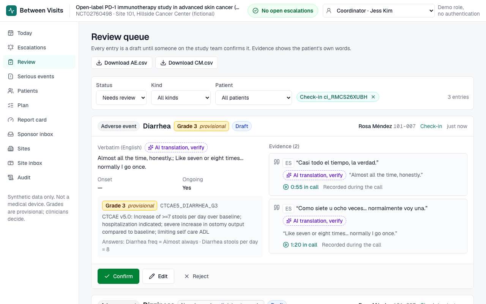
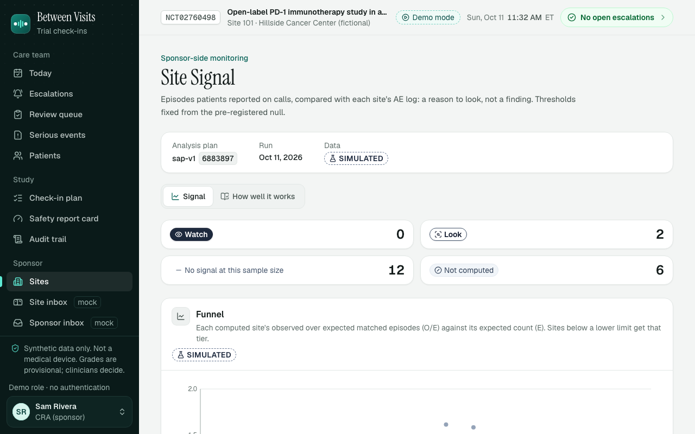
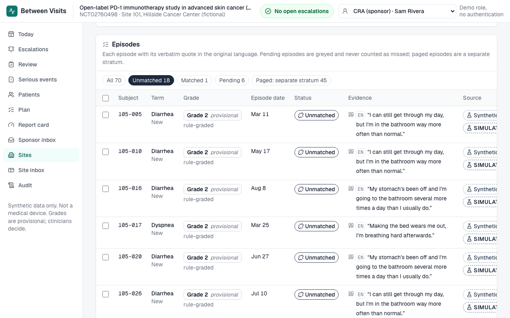
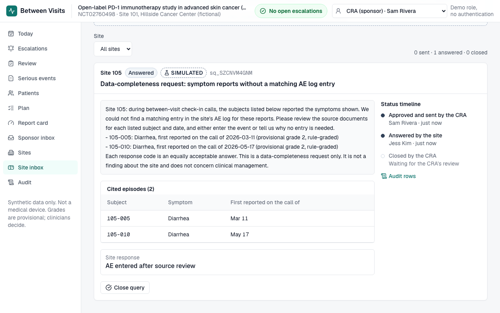

HackRU Fall 2026 · Regeneron clinical-trial challenge
No symptom waits for the next visit, in any language, at any pace.
A voice agent calls cancer-trial patients in the days after a dose, in English or Spanish and at their pace. Fixed CTCAE rules grade the answers, the on-call nurse is paged for red flags, and the study team gets drafts with the patient's own words. On the sponsor side, Site Signal points a monitor at sites whose AE log disagrees with what their own patients reported.
The AI listens, rules grade, humans decide.
The problem
Rosa, a synthetic patient
How it works
Demo



Safety by design
| Rule | How it holds | Proof |
|---|---|---|
| Discloses AI, offers a human | First sentence of every call, every language | REQ-001, REQ-002 |
| Approved words only | Questions and escalation lines come from data files in the call's language; no live translation of clinical text | REQ-003 |
| No medical advice | Medical questions get the approved deferral line and become a nurse task | REQ-007, judge over every transcript |
| Rules grade, not the AI | Grades and escalation come only from fixed CTCAE v5 and red-flag rules | REQ-004, REQ-005 |
| Fail safe | Errors on a red-flag path escalate to a person; paging never waits on statistics | backend tests |
| A human decides | Every confirmation, signature and site query is a person's action, audited in a hash chain | REQ-010, REQ-019 |
Real browser calls are reported as MEASURED in their own row (eval/results/voice_checks.json), never pooled with simulated results.
Site Signal SIMULATED



Capture discordance: episodes patients reported with no matching AE-log entry, compared with the other sites for the same symptom mix. A reason to look, not a finding. Thresholds were frozen in git (tag sap-v1) before any result existed.
How well it works, and what it gets wrong
| Urgent cases paged | 8 of 8 [0.631, 1] |
| Personas passing | 19 of 20 [0.751, 0.999] |
| Expected side effects captured | 1.0 [0.815, 1] |
| Medical advice given | 0 flags |
Known miss: P19 (Spanish, extra time), a false urgent page from the post-call safety net. 8 of 8 cannot rule out missing a third of red flags; 59 straight catches would show 95% recall.
| Planted capture loss | Look or Watch | Watch |
|---|---|---|
| 25% | {{ss:summary:power[indicator=discordance,tier=look,design_row=true,f=0.25].power // power[indicator=discordance,tier=look,n_sites=20,mu=1.5,f=0.25].power:p2}} ± {{ss:summary:power[indicator=discordance,tier=look,design_row=true,f=0.25].mc_se // power[indicator=discordance,tier=look,n_sites=20,mu=1.5,f=0.25].mc_se:f3}} | {{ss:summary:power[indicator=discordance,tier=watch,design_row=true,f=0.25].power // power[indicator=discordance,tier=watch,n_sites=20,mu=1.5,f=0.25].power:p2}} ± {{ss:summary:power[indicator=discordance,tier=watch,design_row=true,f=0.25].mc_se // power[indicator=discordance,tier=watch,n_sites=20,mu=1.5,f=0.25].mc_se:f3}} |
| 50% | {{ss:summary:power[indicator=discordance,tier=look,design_row=true,f=0.5].power // power[indicator=discordance,tier=look,n_sites=20,mu=1.5,f=0.5].power:p2}} ± {{ss:summary:power[indicator=discordance,tier=look,design_row=true,f=0.5].mc_se // power[indicator=discordance,tier=look,n_sites=20,mu=1.5,f=0.5].mc_se:f3}} | {{ss:summary:power[indicator=discordance,tier=watch,design_row=true,f=0.5].power // power[indicator=discordance,tier=watch,n_sites=20,mu=1.5,f=0.5].power:p2}} ± {{ss:summary:power[indicator=discordance,tier=watch,design_row=true,f=0.5].mc_se // power[indicator=discordance,tier=watch,n_sites=20,mu=1.5,f=0.5].mc_se:f3}} |
| Gross ({{ss:summary:design.gross_f:pct2}}) | {{ss:summary:power[indicator=discordance,tier=look,design_row=true,f=0.9].power:p2}} ± {{ss:summary:power[indicator=discordance,tier=look,design_row=true,f=0.9].mc_se:f3}} | {{ss:summary:power[indicator=discordance,tier=watch,design_row=true,f=0.9].power:p2}} ± {{ss:summary:power[indicator=discordance,tier=watch,design_row=true,f=0.9].mc_se:f3}} |
| No planted site: false Look per site | {{ss:summary:null.look_per_site.rate:p2}} ± {{ss:summary:null.look_per_site.mc_se:f3}} (nominal 0.05) | |
| No planted site: any false Watch per study | {{ss:summary:null.watch_fwer.rate:p2}} ± {{ss:summary:null.watch_fwer.mc_se:f3}} (nominal 0.10) | |
Failure case (honest sites differ mainly in recording diligence), 50% loss, Look or Watch: discordance {{ss:summary:failure_case.a.power[indicator=discordance,tier=look,f=0.5].power:p2}} ± {{ss:summary:failure_case.a.power[indicator=discordance,tier=look,f=0.5].mc_se:f3}} vs plain AE-rate KRI {{ss:summary:failure_case.a.power[indicator=rate_kri,tier=look,f=0.5].power:p2}} ± {{ss:summary:failure_case.a.power[indicator=rate_kri,tier=look,f=0.5].mc_se:f3}}. ± is the Monte Carlo SE.
Readiness
make setup && make seed && make demo: demo mode replays a call through the real backend with no API keys. MIT licensed.
Backend tests, data validation with a product-name guard, frontend typecheck and lint, a quickstart job, and a full-history secret scan.
Every requirement maps to tagged tests and their latest result (validation/traceability.md).
The Site Signal analysis plan was tagged sap-v1 before any output; the evaluation seed comes from a public beacon drawn after the tag.
Every human action is an append-only audit event; GET /api/audit/verify detects tampering inside the database.
WHAT_IT_GETS_WRONG.md and NOT_BUILT.md, one GitHub issue per item not built.
Next steps
Retrospective analysis of completed trials that collected patient-reported and clinician-reported (CTCAE) symptoms for the same patients, with site IDs. Pre-registered as a new plan version before data access. This is the only test that does not depend on our simulator.
The AI listens, rules grade, humans decide.